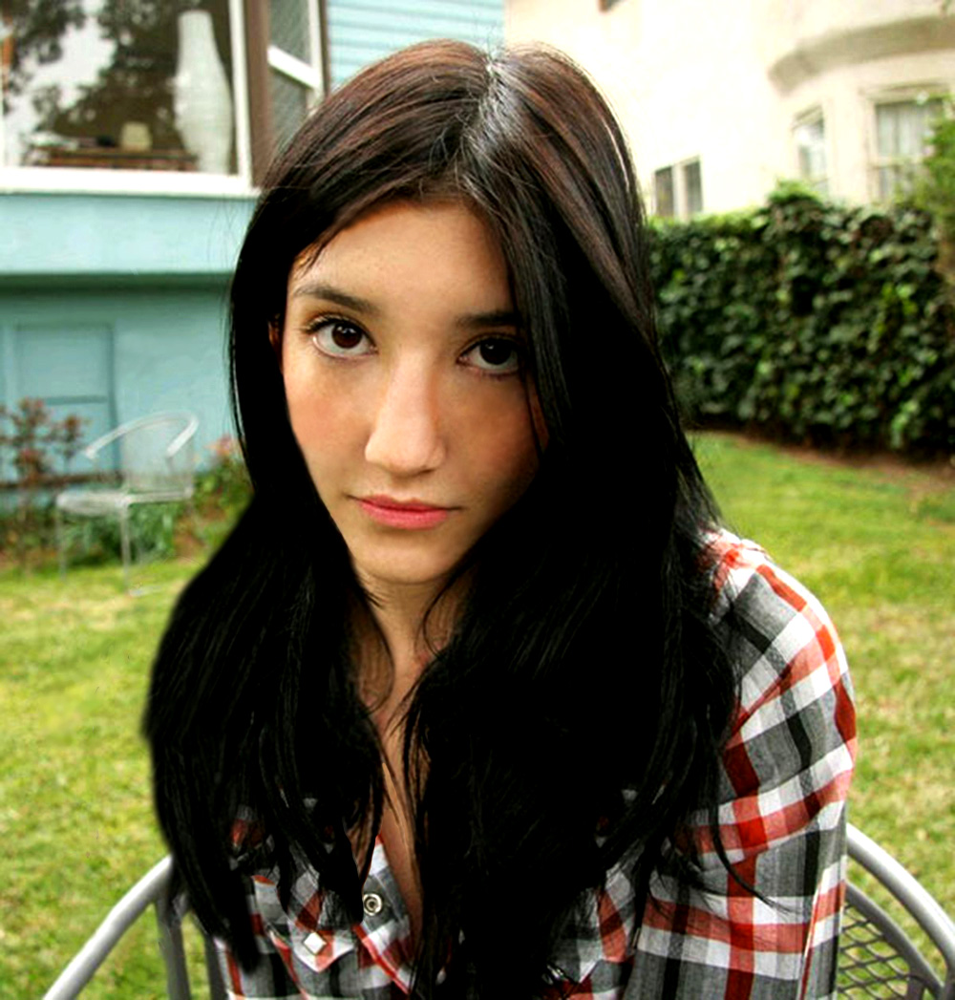
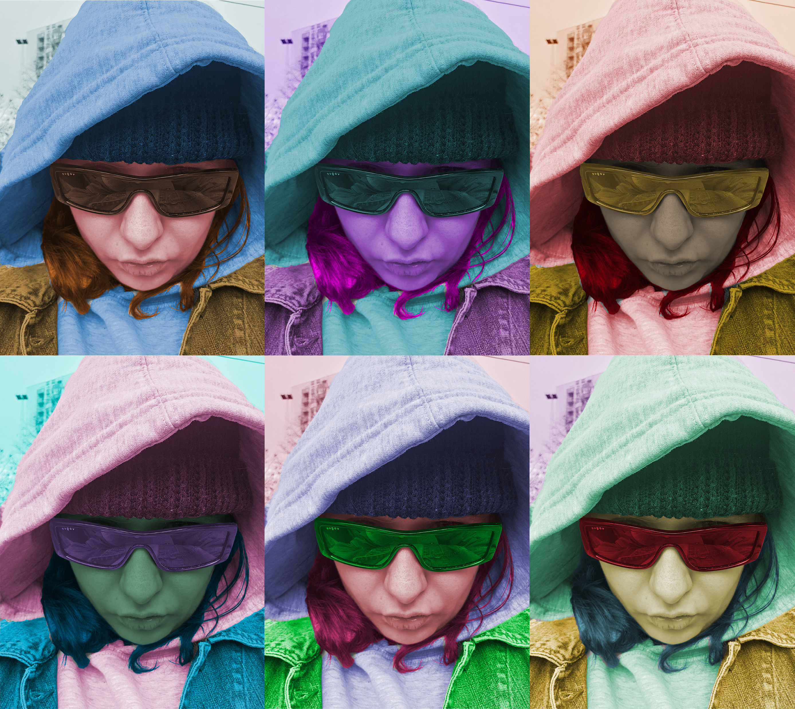
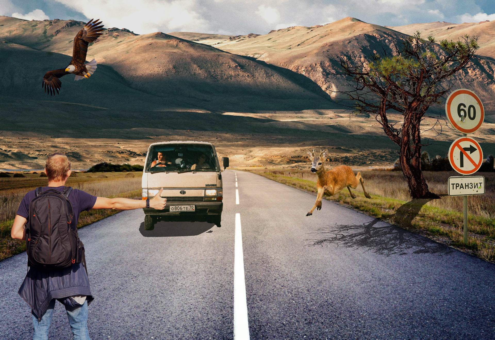
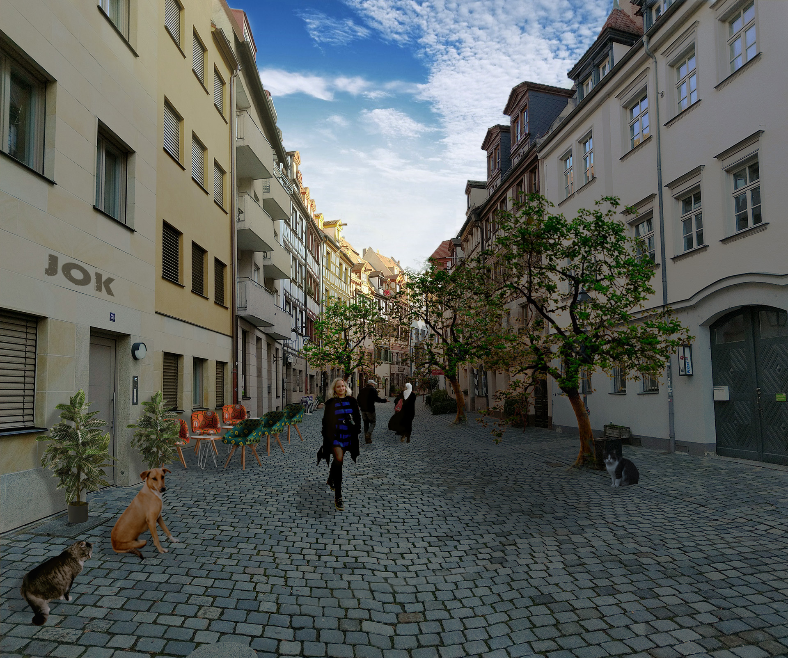

Dobrodošli na stranicu mojih radova iz kolegija Digitalni multimedij 1.
Unutar tri skupine, vidjet ćete zadatke koji su vodili svakom od tri kolokvija.
VEKTORSKA GRAFIKA
Adobe Illustrator i Fontforge programi su koje sam koristila za izradu prve četiri vježbe i prvog kolokvija.
PRVA VJEŽBA
Prva vježba imala je za zadatak izradu vlastitog fonta. Međutim, dizajnirali smo samo slova svog imena i prezimena, te hrvatske slovne znakove kao što su č, ć, š, ž i đ.
U drugoj vježbi trebali smo u ilustratoru iskoristiti svoj font kako bismo unutar njega izgradili krivulje. Međutim, pošto sam ja izradila italic font, iskoristila sam već neki postojeći.
U trećoj vježbi u Ilustratoru smo crtali cvijet, a zatim primjenjujući naučene tehnike kao što su rotacija, scale, kopiranje i slično, nacrtala sam proizvoljnu sliku pejzaža.
Na prvom projektnom zadatku dobili smo fotografiju voća u čaši, koju smo morali što urednije i realističnije nacrtati u Ilustratoru, koristeći se dosad naučenim.
Adobe Photoshop program je koji sam koristila za izradu sljedeće tri vježbe i drugog kolokvija.
PETA VJEŽBA
Na petoj vježbi dočekale su nas fotografije kojima je bilo potrebno retuširanje. Ovu sam fotografiju izabrala za retuširanje.

ŠESTA VJEŽBA
Na šestoj vježbi naučili smo kako iz crno bijele fotografije dobiti onu u boji, tj kako pomoću maski kolorirati fotografije. Ovo je slika mene u šest različitih koloracija.

SEDMA VJEŽBA
Sedma je vježba sad nešto i ozbiljnija. U fotomonzaži spojila sam odvojene fotografije i uredila ih tako da im se podudaraju tonaliteti.

DRUGI PROJEKTNI ZADATAK
Drugi projektni zadatak sličan je sedmoj vježbi, ali smo morali dodati i fotografiju sebe. Na ovom radu puno sam više pazila na sjene nego u prethodnom zadatku.

VIDEO I WEB
Adobe Premiere Pro i Notepad++ programi su koje sam koristila za izradu zadnje četiri vježbe i trećeg kolokvija.
OSMA VJEŽBA
Za osmu vježbu snimila sam video sa svog prozora, pokušavajući stvoriti kinematograf lišća na vjetru.
DEVETA VJEŽBA
U devetoj vježbi spojila sam video sa koncerta sa istom pjesmom snimljenom na laptopu, pokušavajući napraviti prijelaz između digitalne glazbe i one izvođene uživo.
DESETA I JEDANAESTA VJEŽBA
Deseta vježba za zadatak nam je dala izradu WEB stranice koristeći HTML i CSS, a jedanaesta nas je naučila kako tu istu prenjeti na Github.